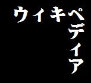
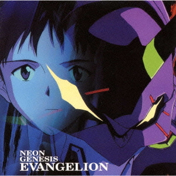

Evangelion es como un rompecabezas. Cualquiera puede verlo y encontrar sus propias respuestas. En otras palabras, permite pensar por sí mismo, de modo que cada uno crea su propio mundo. Nunca se darán todas las respuestas, ni siquiera en las películas. Muchos fanes de Evangelion tienen la esperanza de que se lance una suerte de libro Todo sobre Evangelion, pero eso no ocurrirá. No esperes a que otros te den la respuesta a tus preguntas, que te lo pongan todo delante. Todos tenemos nuestras propias respuestas.
Aparte de la aparentemente temática dominante de la lucha entre NERV y los ángeles, otros temas de la serie son el miedo al cambio y a la tecnología, así como la relación entre esta y el hombre, así como el abuso de la ciencia.
Además, la serie muestra el crecimiento interior y la búsqueda de la identidad de Shinji Ikari, siendo el EVA su propia representación y los ángeles los problemas a los que se debe enfrentar. Los personajes sufren daño físico y psicológico, siendo los EVA representaciones de protección.
Exteriormente, la serie está fuertemente influenciada por el anime mecha de los años 1970, género del que Anno fue un gran aficionado. En la segunda mitad de la serie se incrementa el trabajo con texto en blanco sobre fondo negro, un método usado anteriormente por Jean-Luc Godard. Este texto conecta bien con el ánimo de los personajes, sobre todo con Shinji; además, es especialmente usada en los dos últimos episodios de la serie.

Se publicaron diversos álbumes con la música de fondo del anime y películas, compuestas casi en su totalidad por Shirō Sagisu, quien recibió el premio Kobe Animation 1997 por la "Mejor banda sonora" por los tres álbumes del BSO de la serie de televisión. Uno de los puntos a destacar es la tema de apertura de la serie, «Zankoku na Tenshi no These», obra de Neko Oikawa, Hidetoshi Satou y Yōko Takahashi. Igualmente famoso es su tema de cierre, «Fly Me to the Moon» originalmente de Bart Howard, que cuenta con la interpretaciones de diferentes las actrices de voz de la serie y cuya versión principal es interpretada por Yuko Miyamura y Megumi Hayashibara, cambiando según el episodio.
Fueron lanzados tres álbumes con la banda sonora de la serie, y cuyo tercer volumen le brindó a Sagisu el premio de Kobe Animation al mejor trabajo musical de 1997. Además se produjeron diversos álbumes una vez finalizado el anime: Neon Genesis Evangelion: Addition y otros varios álbumes de estudio; una serie de cuatro álbumes llamados Neon Genesis Evangelion Classical que contenían música clásica de Beethoven, Verdi y Bach, entre otros; y compilaciones como Neon Genesis Evangelion Decade. Las dos películas que le siguieron contaron con diversas piezas reconocidas de música clásica, los temas propios del anime, además de nuevas composiciones de Sagisu y sencillos vocales.